GaussView 6：附录（p.227–266）¶
图标与菜单总表、计算关键词与选项、常见问题、Clean 技巧、表面配色、Windows 文件关联、命令行变量、脚本
原文件：
../gview6官方说明书.md（全量单文件存档）｜图片目录：../imgs/
图标与菜单项总表（Table of Icons and Menu Items）¶
下表列出了可用的图标和菜单项及其功能。大多数项目在文档的相关章节中有详细介绍。
请注意，在 Mac OS X 系统上，功能修饰键为 Command 键，而非 Control 键。
| Icon | Name | Menu Path | Purpose | Keystroke |
|---|---|---|---|---|
| New Molc. Group |
File=>New Mol. Group | 创建新分子（按子菜单所选项执行）。 | Ctrl-N | |
| Add to Molc. Group |
File=>New=>Add to Mol. Group |
向当前分子组中添加一个新分子。 | Ctrl-A | |
| Open | File=>Open | 打开 GaussView 支持的文件。 | Ctrl-O | |
| File=>Recent Files | 此菜单路径包含最近打开过的文件列表。可用文件/目录（File/Directory）偏好设置中的最大最近文件数（Maximum Recent Files）字段指定列表条目数。文件列表在 GaussView 会话之间保存。 | |||
| File=>Related Files | 与当前分子相关的文件列表（例如输入文件、输出日志文件、检查点文件等）。 | |||
| File=>Refresh | 在活动视图窗口（View window）中重新载入当前文件。 | |||
| Save | File=>Save | 将活动分子组中的分子保存到文件。 | Ctrl-S | |
| File=>Save Temp Files | 保存与 Gaussian Quick Launch 任务相关的所有临时文件。 | |||
| File=>Convert Files | 在各种 Gaussian 文件与分子文件类型之间转换。 | |||
| File=>Directory | 在本地操作系统中打开与活动分子组对应文件所在的目录，并选中该文件。 | |||
| File=>Print | 打印活动视图窗口的内容。将打开操作系统的打印对话框。 | Ctrl-P | ||
| Save Image | File=>Save Image File |
生成当前视图窗口的图形文件。 | ||
| Save Movie | File=>Save Movie | 保存电影文件、电影帧文件或两者（通过子菜单选择）。 | ||
| Preferences | File=>Preferences | 指定 GaussView 行为各方面的默认值。 | ||
| File=>Exit | 关闭所有 GaussView 窗口并退出应用程序。 | |||
| Undo | Edit=>Undo | 撤销上一次编辑操作，并保留所有历史操作列表以便重做（Redo）。 | Ctrl-Z | |
| Redo | Edit=>Redo | 撤销上一次 Undo 操作。 | Ctrl-Y | |
| Cut | Edit=>Cut | 将当前所选内容剪切到剪贴板。 | Ctrl-X |
| Copy | Edit=>Copy | 将当前所选内容复制到剪贴板。 | Ctrl-C | |
|---|---|---|---|---|
| Paste | Edit=>Paste | 将剪贴板内容复制到当前模型（按子菜单所选项执行）。 | ||
| Edit=>Paste=>Add to Molecule Group |
将剪贴板上的分子作为新模型添加到当前模型组中。 | Ctrl-V | ||
| Edit=>Paste=>Replace Molecule |
用剪贴板内容替换当前分子。 | |||
| Edit=>Paste=>Append Molecule |
将剪贴板上的分子作为独立片段添加到当前模型中。 | |||
| Delete | Edit=>Delete | 删除当前所选内容。 | Del | |
| Image Capture |
Edit=>Image Capture | 将活动视图窗口的内容复制到剪贴板。 | Ctrl-I | |
| Standardize Z-Matrix |
Edit=>Standardize Z- Matrix |
将当前 Z 矩阵改写为标准形式。 | ||
| Symmetrize | Edit=>Symmetrize | 对当前模型施加点群对称性。 | ||
| Edit=>Reorient | 恢复分子的标准取向。 | |||
| Rebond | Edit=>Rebond | 启动重新成键过程，GaussView 基于距离算法重新识别成键原子。请注意，Gaussian 计算通常不使用屏幕上的成键信息，该信息主要为便于观察分子化学特征而显示。 | ||
| Remove Weak Bonds |
Edit=>Remove Weak Bonds |
从结构中删除所有弱键。弱键以原子间的虚线表示。 | ||
| Clean | Edit=>Clean | 按照一套符合化学直觉的规则调整分子几何。 | ||
| Edit=>Mirror Invert | 反转分子的立体化学。 | |||
| Atom List Editor |
Tools=>Atom List | 在类似电子表格的对话框中编辑分子的数字坐标和参数。 | ||
| Redundant Coord. Editor |
Tools=>Redundant Coordinates |
为 Gaussian ModRedundant 选项指定冗余内坐标。 | ||
| Connection Editor |
Tools=>Connection | 指定两个相关分子结构中的对应原子（例如用于 Opt=QST2 或 QST3 输入）。 | ||
| Select Layer | Tools=>Select Layer | 为 ONIOM 计算以图形方式将原子分配到各层。 |
| Tools=>Atom Groups | 打开原子分组编辑器（Atom Group Editor），用于定义片段、ONIOM 层、冻结原子及其他原子分组。 | ||
|---|---|---|---|
| Tools=>Atom Selection |
打开原子选择编辑器（Atom Selection Editor），可执行高级选择操作。 | ||
| Tools=>PDB Residues | 打开 PDB 残基编辑器（PDB Residue Editor），可基于来源 PDB 文件中定义的残基进行操作。 | ||
| Tools=>PDB Secondary Structures |
打开 PDB 二级结构编辑器（PDB Secondary Structure Editor），可基于 PDB 文件二级结构（如链和螺旋）进行操作。 | ||
| Tools=>Point Group | 为当前模型指定/施加对称性。 | ||
| Crystal Editor |
Tools=>PBC | 为周期性结构创建和修改晶胞。 | |
| MO Editor | Tools=>MOs | 查看、重排分子轨道并修改占据数。 | |
| Tools=>Custom Bonding Parameters |
指定标准键型的备用键长。 | ||
| Element Fragment |
Builder=>Element Fragment |
打开元素片段调色板（Element Fragments palette）。 | |
| Ring Fragment |
Builder=>Ring Fragment |
打开环状结构调色板。 | |
| R-Group Fragment |
Builder=>R-Group Fragment |
打开官能团片段调色板。 | |
| Biological Fragment |
Builder=>Biological Fragment |
打开氨基酸与核苷片段调色板。 | |
| Custom Fragment |
Builder=>Custom Fragment |
访问自定义片段库。 | |
| Fragment | Builder=>Fragment | 子菜单显示所勾选类型的片段列表。 | |
| Place Fragment at Centroid of Selected Atoms |
Builder=>Place Fragment at Centroid of Selected Atoms |
将原子放置在当前所选原子的质心位置。 | |
| Modify Bond |
Builder=>Modify Bond | 选择两个原子后打开键 SmartSlide 对话框。 | |
| Modify Angle |
Builder=>Modify Angle | 选择三个原子后打开键角 SmartSlide 对话框。 | |
| Modify Dihedral |
Builder=>Modify Dihedral |
选择四个原子后打开二面角 SmartSlide 对话框。 | |
| Inquire | Builder=>Inquire | 查看当前分子的结构数据。 |
| Add Valence | Builder=>Add Valence | 为所选原子添加一个额外的氢。 | ||
|---|---|---|---|---|
| Delete Atom |
Builder=>Delete Atom | 删除原子和/或开放价（悬空半键）。 | ||
| Invert Atom | Builder=>Invert Atom | 围绕所选原子反转分子结构。 | ||
| Select Atoms by Clicking |
Builder=>Select Atoms by Clicking |
通过单击选择原子。 | ||
| Select Atoms by Rubberband |
Builder=>Select Atoms by Rubberband |
通过单击拖拽出包围原子的矩形框来选择原子。 | ||
| Select Atoms by Brush |
Builder=>Select Atoms by Brush |
像用画笔一样单击并扫过原子以选择原子。 | ||
| Deselect All Atoms |
Builder=>Deselect All Atoms |
取消选择所有当前选中的原子。 | ||
| Select All Atoms |
Builder=>Select All Atoms |
选择所有原子。 | ||
| Add View | View=>Add View | 为当前分子创建新的视图窗口，可独立调节视角。 | ||
| Center | View=>Center | 将分子居中于视图窗口（并调整大小）。 | ||
| View=>Builder | 关闭或重新打开独立构建器（Builder）调色板。 | |||
| View=>Hydrogens | 控制视图窗口中氢的显示。 | |||
| View=>Dummies | 控制视图窗口中虚原子的显示。 | |||
| View=>Labels | 若选中，为每个原子标注其序号（反映其在原子列表中的顺序）。 | |||
| View=>Symbols | 若选中，显示每个原子的化学符号。 | |||
| View=>Bonds | 控制视图窗口中键的显示。 | |||
| View=>Synchronize | 关联各视图，使基于鼠标的操作同步。 | |||
| View=>Cartesian Axes | 控制视图窗口中 X、Y、Z 坐标轴的显示。 | |||
| View=>Stereochemistry | 通过将相关原子标记为 R 或 S 来指示分子的立体化学。 | |||
| View=>Positioning Tools |
在视图窗口工具栏中显示分子定位工具图标。 | |||
| Display Format |
View=>Display Format | 指定分子和表面的显示格式。 | Ctrl-D |
| Calculation | Calculate=>Gaussian Calculation Setup |
为当前视图窗口中的分子结构设置 Gaussian 输入，并可选择运行任务。 | Ctrl-G | |
|---|---|---|---|---|
| Quick Launch |
Calculate=>Gauss. Quick Launch |
为当前分子运行 Gaussian 任务，跳过 Gaussian Calculation Setup 对话框。 | ||
| Schemes | Calculate=>Gauss. Calc. Scheme |
定义和修改 Gaussian 计算方案（calculation schemes）。 | ||
| GMMX Conformer Dialog |
Calculate=>GMMX Conformer Dialog |
执行构象搜索。 | ||
| Current Jobs |
Calculate=>Current Jobs |
显示当前正在运行的由 GaussView 发起的 Gaussian 任务（包括 CubeGen 和 FreqChk）。 | ||
| SC Job Manager |
Calculate=>SC Job Manager |
打开 SC Job Manager 功能。 | Ctrl-J | |
| Results=>Summary | 提供 Gaussian 计算结果的汇总数据（打开结果文件后）。 | |||
| Results=>Charge Distribution |
显示由各种 Gaussian 方法计算的部分电荷密度。 | |||
| Results=>PCM Solvation Cavity |
显示该 Gaussian 任务的 IEFPCM 溶剂化空腔。 | |||
| Results=>Atom Properties |
显示预测的原子电荷及其他原子性质。 | |||
| Results=>Bond Properties |
显示预测的键级及其他性质。 | |||
| Results=> Surfaces/Contours |
创建、载入、保存和显示表面与等值线。 | |||
| Results=>Vibrations | 显示计算得到的振动及其他光谱数据，包括简正模式动画。 | |||
| Results=>NMR | 显示计算得到的 NMR 光谱。 | |||
| Results=>UV-VIS | 显示预测的 UV/可见光谱。 | |||
| Results=>ORD | 显示预测的 ORD 光谱。 | |||
| Results=>Molecule Group Table |
以表格形式显示一个或多个任务的结果。 | |||
| Results=>Scan | 显示势能面扫描的图像。 | |||
| Results=>IRC/Path | 显示预测的 IRC 路径图像。 | |||
| Results=>Trajectory | 显示 ADMP 或 BOMD 计算的轨迹图。 | |||
| Results=>Optimization | 显示几何优化结果的图像。 | |||
| Results=>Energy Plot | 显示 GMMX 计算的能量构象图。 | |||
| View / Edit File |
Results=>View / Edit File |
为当前分子启动日志文件的编辑会话。 |
| Stream Output File |
Results=>Stream Output File |
在 Gaussian 计算运行时，持续显示其输出。 | ||
|---|---|---|---|---|
| Windows=>Molecule Groups=>Show All |
显示/恢复所有模型组的窗口。 | |||
| Windows=>Molecule Groups=>Show None |
隐藏所有模型组的窗口。 | |||
| Windows=>Molecule Groups=>name |
显示/恢复指定模型组的窗口。 | |||
| Windows=>Minimize All |
最小化所有视图窗口。 | |||
| Windows=>Restore | 弹出活动视图窗口。 | |||
| Windows=>Restore All | 打开所有最小化的视图窗口。 | |||
| Windows=>Close | 关闭活动视图窗口。 | |||
| Windows=>Close All | 关闭所有打开的视图窗口。 | |||
| Previous | Windows=>Previous | 按顺序激活上一个视图窗口。 | PgUp | |
| Next | Windows=>Next | 按顺序激活下一个视图窗口。 | PgDown | |
| Cascade | Windows=>Cascade | 将所有视图窗口层叠排列。 | ||
| Tile | Windows=>Tile | 调整视图窗口大小并重新排列，使全部可见。 | ||
| Windows=>name | 使指定的视图窗口成为活动窗口。 | |||
| Help | Help=> GaussView Help |
打开 GaussView 帮助功能。 | Ctrl-H | |
| Help=> Quick Start | 关于构建分子、Gaussian 任务设置与运行、结果可视化的基本信息。 | |||
| Help=> Menus and Icons |
所有图标和菜单项的参考表。 | |||
| Help=> How do I...? | 关于 GaussView 的常见问题。 | |||
| Help=> Tutorials | GaussView 教程列表。 | |||
| Help=>Gaussian Help | 在默认浏览器中打开 Gaussian 网站的帮助部分。若无互联网访问，则改为打开 GaussView 应用程序目录内附带的本地副本。 | |||
| Help=>About GaussView |
显示 GaussView 版权与版本信息。 | |||
| Help=>GaussView Tips | 显示 GaussView 使用技巧。 | |||
| Fragment Placement |
在控制窗口中打开包含片段放置选项的面板。 |
活动模型视图（Active Model View）窗口中的图标：
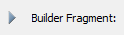
| Animate | 依次显示分子组内的所有模型。 | ||
|---|---|---|---|
| Stop Animation |
停止动画显示。 | ||
| Single View | 仅显示分子组内的一个模型。 | ||
| Multi View | 显示分子组内的所有模型。 |
五个片段调色板（Fragment Palette）窗口中的图标：
| Tacked | 使该调色板保持打开，直到明确关闭（非模态操作）。 | ||
|---|---|---|---|
| Untacked | 当打开另一个调色板时关闭该调色板（模态操作）。 |
各种坐标编辑对话框相关的图标：
| Z-matrix Coordinates |
显示 Z 矩阵坐标。 | ||
|---|---|---|---|
| Cartesian Coordinates |
显示笛卡尔坐标。 | ||
| Fractional Coordinates |
显示周期性体系的分数坐标。 | ||
| ONIOM Layers |
显示 ONIOM 层分配及相关数据。 | ||
| MM Parameters |
显示分子力学原子类型及其他数据。 | ||
| PDB Info | 显示来自 PDB 文件的残基与链归属。 | ||
| Isotope Masses |
显示包含同位素质量的列。 | ||
| Optimize Coordinate |
显示指定原子冻结或激活优化的列。 | ||
| Create a New Coordinate |
在冗余坐标编辑器（Redundant Coordinate Editor）中添加新的冗余坐标。 | ||
| Sort Ascending |
在原子列表编辑器（Atom List Editor）中按升序排列行。 | ||
| Sort Descending |
在原子列表编辑器中按降序排列行。 |
GaussView 中多处使用的通用图标：
| Move Up | 将所选项在列表中上移。 | ||
|---|---|---|---|
| Move Down | 将所选项在列表中下移。 | ||
| Add Selected |
将所选项添加到列表。 | ||
| Add All | 将所有条目添加到列表。 |
| Remove Selected |
将所选项从列表中删除。 | ||
|---|---|---|---|
| Remove all | 将所有条目从列表中删除。 |
工具栏配置（Toolbar Configuration）¶
在工具栏上右键并选择配置（Configure…），可打开 Customize Toolbars 面板，选择快速访问工具栏上显示哪些图标。
工具栏配置面板（The Toolbar Configuration Panel）
Actions 字段允许从对应八个默认工具栏分区的多个列表中选择功能：构建器（Builder）、Calculate Gaussian、计算选项（Calculation Options）、编辑（Edit）、文件（File）、工具（Tools）、视图（View）和窗口（Windows）。这些分区显示在 Toolbars 字段中。
-
构建器（Builder）：包含与构建分子相关的功能。
-
Calculate Gaussian：包含与执行 Gaussian 计算相关的功能。
-
计算选项（Calculation Options）：包含用于跟踪 Gaussian 计算的功能。
-
编辑（Edit）：包含撤销（Undo）、重做（Redo）等标准编辑操作以及模型清理功能。
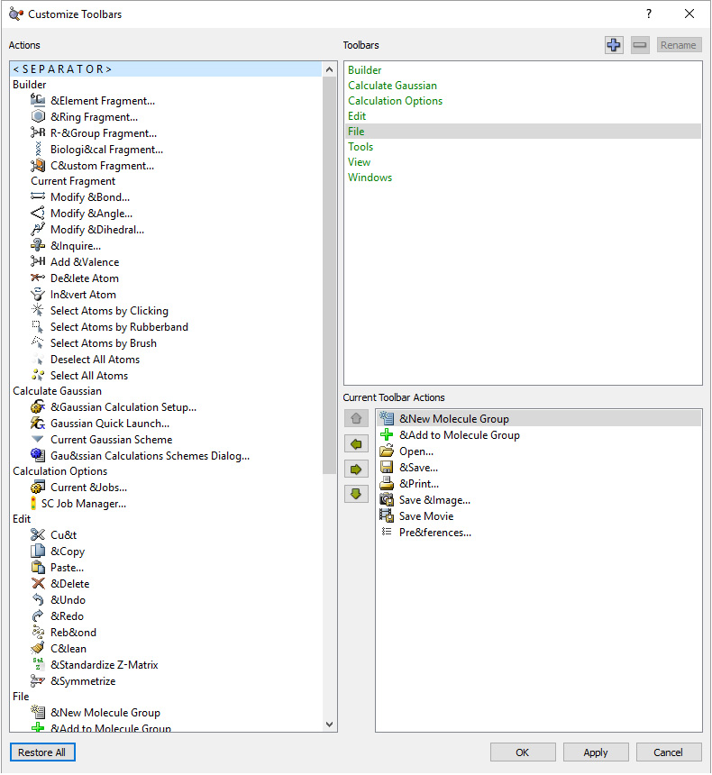
-
文件（File）：包含保存与载入文件以及生成图像与电影文件的功能。
-
工具（Tools）：包含查看与编辑原子性质（如位置和成键）以及查看分子轨道信息的功能。
-
视图（View）：包含控制当前可见原子与分子组显示以及切换活动窗口的功能。
-
窗口（Windows）：包含控制窗口显示方式以及在活动窗口之间切换的功能。
Toolbars 字段包含以下选项：
-
构建器（Builder）：单击后可通过 Current Toolbar Actions 字段移入/移出构建器（Builder）工具栏分区的功能。
-
Calculate Gaussian：单击后可通过 Current Toolbar Actions 字段移入/移出 Calculate Gaussian 工具栏分区的功能。
-
计算选项（Calculation Options）：单击后可通过 Current Toolbar Actions 字段移入/移出计算选项工具栏分区的功能。
-
编辑（Edit）：单击后可通过 Current Toolbar Actions 字段移入/移出编辑（Edit）工具栏分区的功能。
-
文件（File）：单击后可通过 Current Toolbar Actions 字段移入/移出文件（File）工具栏分区的功能。
-
工具（Tools）：单击后可通过 Current Toolbar Actions 字段移入/移出工具（Tools）工具栏分区的功能。
-
视图（View）：单击后可通过 Current Toolbar Actions 字段移入/移出视图（View）工具栏分区的功能。
-
窗口（Windows）：单击后可通过 Current Toolbar Actions 字段移入/移出窗口（Windows）工具栏分区的功能。
Actions 与 Current Toolbar Actions 字段之间的左右箭头按钮分别用于从工具栏移除或添加操作，上下箭头用于控制当前所选操作的位置。
使用自定义片段库（Using a Custom Fragment Library）¶
Custom Fragment 按钮可用于访问和修改本地片段库。当其处于未激活状态时单击，将激活上次使用的自定义片段库；其中的第一个片段将成为当前片段，显示在工具栏下方区域以及各构建按钮右侧的弹出菜单中。若不存在自定义片段库，该区域将为空。
当 Custom Fragment 按钮处于选中状态时单击，将打开 Custom Fragments 调色板，弹出如下图所示的下方对话框：
Custom Fragments 窗口（The Custom Fragments Window）
该调色板允许从打开的库中选择可用片段。退出对话框后，所选片段将成为当前片段。
调色板顶部的 Library 字段指示当前使用的片段库，之前打开过的库也会出现在列表中。可单击标有“...”的按钮打开其他库位置。
片段库就是磁盘上的文件夹，库中的单个片段以文件形式存放在该文件夹内。因此，创建新的片段库即是在所需位置创建文件夹，然后在此调色板中选择它。
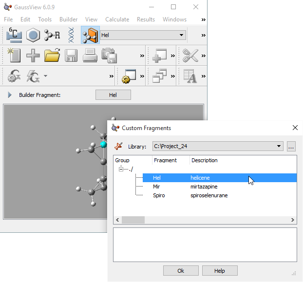
该库最初显然是空的。文件夹内的任何非片段文件都会被忽略——不过，最佳做法是将片段库文件夹仅用于存放片段文件。
片段库内的片段组织为一系列用户定义的分组。若未使用此功能，则所有片段都位于“根”分组中：即如图所示的 ./。
Custom Fragment 上下文菜单通过在调色板中央的片段列表区域右键调出，用于管理和修改片段库，包含以下选项：
-
新建分组（New Group）：在当前库中创建新分组。分组最初为通用名称，可修改。在此等同于 Control-G（Mac OS X 下为 Command-N）。
-
从活动分子新建片段（New Fragment From Active Molecule）：将当前分子添加到当前片段库的当前所选分组中。将设置通用标签和描述，应酌情编辑。在此上下文中，Control-N/Command-N 与此菜单项功能相同。
-
编辑单元格（Edit Cell）：编辑当前条目（分组名、片段名、片段描述）中的文本。请注意，顶层分组名不可修改。
-
删除（Delete）：删除当前选中的片段或片段分组。请注意，顶层片段分组不可删除。Delete 键与此菜单项等效。
-
字体（Font）：更改字体样式与字号。
-
文本颜色（Text Color）：更改文本颜色。
-
背景颜色（Background Color）：更改背景颜色。
-
显示网格（Show Grid）：显示网格。
请注意，库中的片段只能通过先删除再重新添加来更新（无法直接修改已有片段）。
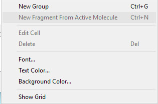
Gaussian 计算设置关键词与选项（Gaussian Calculation Setup Keywords & Options）¶
蓝色条目通过下拉菜单访问。绿色条目为可切换的复选框。关键词（keywords）即出现在 Gaussian 输入文件中的条目。
| Job Type Tab | |
|---|---|
| Job Type => Optimization | opt |
| Use RFO step | opt=rfo |
| Use Quadratic Macrostep | opt=quadmac |
| Use tight convergence | opt=tight |
| Optimize to a => TS (Berny) | opt=ts |
| Optimize to a => TS (QST2) | opt=qst2 |
| Optimize to a => TS (QST3) | opt=qst3 |
| Force Constants => Calculate at First Point | opt=calcfc |
| Force Constants => Calculate at all Points | opt=calcall |
| Force Constants => Read Internal | opt=readfc |
| Force Constants => Read Cartesian | opt=rcfc |
| Job Type => Frequency | freq |
| Compute VCD | freq=vcd |
| Save Normal Modes Options => Yes | freq=savenormalmodes |
| Save Normal Modes Options => No | freq=nosavenormalmodes |
| Skip diag. of full matrix | freq=nodiagfull |
| Select Normal Modes | freq=selectnormalmodes |
| Anharmonic Corrections | freq=anharmonic |
| Specify Anharmonic Modes | freq=selectanharmonicmodes |
| Compute projected frequencies | freq=projected |
| Compute Raman => No | freq=noraman |
| Compute Raman => Yes | freq=raman |
| Compute ROA => Yes | freq=roa |
| Read Incident Light Freqs => Yes | freq cphf=rdfreq |
| Read Incident Light Freqs => No | freq cphf=noread |
| Job Type => Opt+Freq | opt freq |
| Use RFO step | opt=rfo freq |
| Use tight convergence criteria | opt=tight freq |
| Compute VCD | opt freq=vcd |
| Save Normal Modes Options => Yes | opt freq=savenormalmodes |
| Save Normal Modes Options => No | opt freq=nosavenormalmodes |
| Skip diag. of full matrix | opt freq=nodiagfull |
| Select Normal Modes | opt freq=selectnormalmodes |
| Anharmonic Connections | opt freq=anharmonic |
| Specify Anharmonic Modes | opt freq=selectanharmonicmodes |
| Optimize to a => TS (Berny) | opt=ts freq |
| Force Constants => Calculate at First Point | opt=calcfc freq |
| Force Constants => Calculate at all Points | opt=calcall freq |
| Force Constants => Read Internal | opt=readfc freq |
| Job Type Tab | |||
|---|---|---|---|
| Force Constants => Read Cartesian | opt=rcfc freq | ||
| Compute Raman => No | opt freq=noraman | ||
| Compute Raman => Yes | opt freq=raman | ||
| Compute ROA => Yes | opt freq=roa | ||
| Read Incident Light Freqs => Yes | opt freq cphf=rdfreq | ||
| Read Incident Light Freqs => No | opt freq cphf=noread | ||
| Job Type => IRC | irc=calcfc | ||
| Do IRCMax calculation | ircmax=calcfc | ||
| Compute more points, N= | irc=maxpoints=n | ||
| Recalculate Force Constants Every nth Point, n = | irc=recalc=n | ||
| Follow IRC => Forward only | irc=forward | ||
| Follow IRC => Reverse only | irc=reverse | ||
| Force Constants => Calculate Always | irc=calcall | ||
| Force Constants => Read from .CHK | irc=rcfc | ||
| Recorrect Steps => Never | irc=recorrect=never | ||
| Recorrect Steps => Yes | irc=recorrect=yes | ||
| Recorrect Steps => Always | irc=recorrect=always | ||
| Recorrect Steps => Test | irc=recorrect=test | ||
| Job Type => Scan => Rigid | scan | ||
| Job type => Relaxed (Z-Matrix) | opt=z-matrix | ||
| Job type => Scan, Relaxed (Redundant Coord) | opt=modredundant | ||
| Job type => Stability | stable | ||
| Reoptimize the wavefunction | stable=opt | ||
| Job Type => NMR | nmr=giao | ||
| CSGT Method | nmr=csgt | ||
| IGAIM Method | nmr=igaim | ||
| CSGT, IGAIM and Single Origin | nmr=all | ||
| Compute spin-spin couplings => Yes | nmr=spinspin | ||
| Compute spin-spin couplings => Yes, mixed | nmr=mixed | ||
| Method Tab | |||
| Method => Mechanics => UFF | uff | ||
| Method => Mechanics => Dreiding | dreiding | ||
| Method => Mechanics => Amber | amber | ||
| QEq Charges => All Atoms | method=qeq | ||
| QEq Charges => Untyped Atoms | method=untyped | ||
| QEq Charges => Uncharged Atoms | method=uncharged | ||
| Method => Restricted | R prefix | ||
| Method => Unrestricted | U prefix | ||
| Method => Restricted-Open | RO prefix | ||
| Method => Semi-empirical => PM6 | pm6 | ||
| Method => Semi-empirical => PDDG | pddg | ||
| Method => Semi-empirical => AM1 | am1 | ||
| Method => Semi-empirical => PM3 | pm3 | ||
| Method => Semi-empirical => PM3MM | pm3mm | ||
| Method => Semi-empirical => INDO | indo | ||
| Method => Semi-empirical => CNDO | cndo |
| Method Tab | |||
|---|---|---|---|
| Use sparse matrices | sparse | ||
| Method => Hartree-Fock | hf | ||
| Method => DFT => LSDA | lsda | ||
| Method => DFT => BVP86 | bvp86 | ||
| Method => DFT => B3LYP | b3lyp | ||
| Method => DFT => CAM-B3LYP | cam-b3lyp | ||
| Method => DFT => B3PW91 | b3pw91 | ||
| Method => DFT => MPW1PW91 | mpw1pw91 | ||
| Method => DFT => PBEPBE | pbepbe | ||
| Method => DFT => HSEH1PBE | hseh1pbe | ||
| Method => DFT => HCTH | hcth | ||
| Method => DFT => TPSSTPSS | tpsstpss | ||
| Method => DFT => WB97XD | wb97xd | ||
| Method => DFT => APFD | apfd | ||
| Method => MP2 | mp2 | ||
| Method => MP4 | mp4(sdtq) | ||
| Include all electrons | method=full | ||
| Method => CCSD | ccsd | ||
| Read Amplitudes | ccsd=readamplitudes | ||
| Save Amplitudes | ccsd=saveamplitudes | ||
| Method => BD | bd | ||
| Method => CASSCF | casscf | ||
| RFO Quadratic Step | casscf=rfo | ||
| Method => Compound => CBS-4M | cbs-4m | ||
| Method => Compound => CBS-Q | cbs-q | ||
| Method => Compound => CBS-QB3 | cbs-qb3 | ||
| Method => Compound => CBS-APNO | cbs-apno | ||
| Method => Compound => W1BD | w1bd | ||
| Method => Compound => W1U | w1u | ||
| Method => Compound => W1RO | w1ro | ||
| Method => Compound => G1 | g1 | ||
| Method => Compound => G2 | g2 | ||
| Method => Compound => G1 | g1 | ||
| Method => Compound => G3S | g3s | ||
| Method => Compound => G4 | g4 | ||
| Multilayer ONIOM Model | oniom | ||
| Empirical Dispersion => If defined | empiricaldispersion=if defined | ||
| Empirical Dispersion => scheme | empiricaldispersion=scheme | ||
| Empirical Dispersion => none | noempiricaldispersion | ||
| Link0 Tab | |||
| Memory Limit | %mem | ||
| Shared Processors | %nprocshared | ||
| Chkpoint File | %chk | ||
| OldChk File | %oldchk | ||
| Read-write File | %rwf | ||
| Linda Workers | %lindaworkers |
| Link0 Tab | ||||
|---|---|---|---|---|
| Kill Job | %kjob | |||
| General Tab | ||||
| Use Quadratically Convergent SCF | scf=qc | |||
| Ignore Symmetry | nosymm | |||
| Use Modified Redundant Coordinates | geom=modredundant | |||
| Use Counterpose | counterpoise= | |||
| Write Connectivity | geom=connectivity | |||
| Write Gaussian Fragment Data | fragment in molecule specification | |||
| Additional Print | #p | |||
| Write PDB Data | included in molecule specification | |||
| Compute Polarities | polar | |||
| Compute Optical Rotations | optrot | |||
| Read Incident Light Freqs => Yes | cphf=rdfreq | |||
| Read Incident Light Freqs => No | cphf=noread | |||
| Use MaxDisk= | maxdisk | |||
| Geometry => Molecule Specification | geom=check | |||
| Geometry => Title, ..., Molecule Specification | geom=allcheck | |||
| Force Constants => Read Internal | opt=readfc | |||
| Force Constants => Read Cartesian | opt=rcfc | |||
| MO Guess | guess=read | |||
| Guess Tab | ||||
| Guess Method => Core Hamiltonian | guess=core | |||
| Guess Method => Extended Huckel | guess=huckel | |||
| Guess Method => Read checkpoint File | guess=read | |||
| Guess Method => Read checkpoint if possible; otherwise generate | guess=tcheck | |||
| Guess Method => Read input checkpoint file | guess=input | |||
| Mix HOMO and LUMO orbitals | guess=mix | |||
| Always generate guess in optimizations | guess=always | |||
| Only do guess (no SCF) | guess=only | |||
| Localize Orbitals | guess=local | |||
| Save Orbitals to checkpoint file | guess=save | |||
| Permuted orbitals from MOs Dialog | guess=alter | |||
| Use fragments (atom groups) for generating guess | guess=fragment | |||
| Population Tab | ||||
| Level of Output => Full | pop=full | |||
| Level of Output => Regular | pop=regular | |||
| Level of Output => Minimal | pop=minimal | |||
| Level of Output => None | pop=none | |||
| At every geometry | pop=always | |||
| Merz-Kollman (esp) Charges | pop=mk | |||
| Hirshfeld (CM5) Charges | pop=hirshfeld | |||
| Natural Transition Orbitals | pop=nto | |||
| Biorthogonalize orbitals | pop=biorth | |||
| Minimum basis set (MBS) Mulliken Charges | pop=mbs | |||
| Perform NBO calc => Full NBO | pop=nbo |
常见问题（Frequently Asked Questions）¶
GaussView 6 的引用格式是什么？
正常姓名顺序：
GaussView, Version 6, Roy Dennington, Todd Keith, and John Millam, Semichem Inc., Shawnee Mission, KS, 2019.
姓在前：
| Population Tab | |||
|---|---|---|---|
| Perform NBO calc => NPA only | pop=npa | ||
| Perform NBO calc => Full NBO (use NBO 6) | pop=nbo6 | ||
| Perform NBO calc => NPA only (use NBO 6) | pop=npa6 | ||
| Perform NBO calc => Full NBO (use NBO 7) | pop=nbo7 | ||
| Perform NBO calc => NPA only (use NBO 7) | pop=npa7 | ||
| Save orbitals to chk file => Save NLMOs | pop=savenlmos | ||
| Save orbitals to chk file => Save NBOs | pop=savenbos | ||
| Save orbitals to chk file => Save Mixture of NLMOs and NBOs | pop=savemixed | ||
| Save orbitals to chk file => Save NTOs | pop=savento | ||
| Save orbitals to chk file => Save Biorthogonalized | pop=savebiorth | ||
| Save changes for later MM => Save Mulliken | pop=savemulliken | ||
| Save changes for later MM => Save ESP | pop=saveesp | ||
| Save changes for later MM => Save NPA | pop=savenpa | ||
| Save changes for later MM => Save CM5 | pop=savecm5 | ||
| Select density for analysis => Current | density=current | ||
| Select density for analysis => SCF | density=scf | ||
| Select density for analysis => MP2 | density=mp2 | ||
| Select density for analysis => Transition | density=transition | ||
| Select density for analysis => All Transitions | density=alltransition | ||
| Select density for analysis => CI | density=ci | ||
| Select density for analysis => QCI/CC | density=qci | ||
| Read density from checkpoint file | density=check | ||
| PBC Tab | |||
| k-Space Integration Method => Gamma Point Only (k = 0) | pbc=gammaonly | ||
| k-Space Integration Method => Specify Number of Points | pbc=nkpoints | ||
| Solvation Tab | |||
| Model => IEFPCM | scrf=iefpcm | ||
| Model => SMD | scrf=smd | ||
| Model => I-PCM | scrf=ipcm | ||
| Model => SCI-PCM | scrf=scipcm | ||
| Model => CPCM | scrf=cpcm | ||
| Model => Read checkpoint file | scrf=check | ||
| Solvent | solvent | ||
| Read additional input | scrf=read |
GaussView, Version 6, Dennington, Roy; Keith, Todd; Millam, John. Semichem Inc., Shawnee Mission, KS, 2019.
BIBTEX 起始条目
@misc{gv6
author="Roy Dennington and Todd Keith and John Millam", title="GaussView {V}ersion {6}", note="Semichem Inc. Shawnee Mission KS 2019"
可以引用你使用的具体小版本：例如 6.1.1。
如何告诉 GaussView 在哪里找到 Gaussian？
在 Linux、UNIX 和 Mac OS X 系统上，需要将以下文件添加到你的 .bash_profile 初始化文件中（无论默认 shell 是什么）：
export g16root=/path
export GAUSS_SCRDIR=/path
. $g16root/g16/bsd/g16.profile
GaussView 将使用这些条目定位 Gaussian 可执行文件。
如何为频率分析指定不同同位素？
必须定义额外的同位素体（isotopologue）。相关信息见此处。
如何沿简正模式位移几何？请看此处。
如何查看中间优化步骤？
请确保在打开文件（Open Files）对话框中勾选了读取中间几何（Read Intermediate Geometries (Optimizations)）。单击 Retain Settings 按钮可在使用该对话框及 GaussView 会话之间保留此设置。
如何查看中间 IRC 或扫描步骤？
请确保在文件打开选项（Options for Opening Files）面板中勾选了读取中间几何（Read Intermediate Geometries (Scans/IRC)）。在基本打开文件对话框中单击 Options 按钮可进入此对话框。高级打开文件对话框中也有同一面板，名为文件打开选项（File Open Options）。
单击 Retain Settings 按钮可在使用该对话框及 GaussView 会话之间保留此设置。
如何查看 3D 扫描图？
恰好扫描两个变量时会自动生成三维扫描图。
如何拖放文件？
在 Windows 和 MAC OS X 平台上，可将文件从资源管理器窗口或其他来源拖放到视图窗口（View window）中，从而添加到当前分子组。用鼠标左键拖放将载入每个文件的内容并添加到分子组。
电荷分布偏好设置（Charge Distribution Preferences）¶
电荷分布（Charge Distribution）对话框中各条目的默认值可用电荷分布偏好设置（Charge Distribution Preferences）面板设定（见下图）。
电荷分布偏好设置（Charge Distribution Preferences）
该偏好设置面板指定如何可视化原子电荷结果，选项如下：
-
显示数字（Show Numbers）：在每个原子旁放置原子电荷数值。
-
按电荷给原子着色（Color Atoms by Charge）：根据 Color Range 字段和 Symmetric Color Range 复选框的设置，按原子电荷重新给每个原子着色。
-
对称颜色范围（Symmetric Color Range）：强制电荷范围的正负极限具有相同的绝对值（无论原子电荷值的实际范围如何）。
-
固定颜色范围（Fixed Color Range）：强制电荷显示使用默认固定范围。该范围默认为 -1.0 至 1.0，可在 Charge Distribution Preferences 中修改。
-
对话框的偶极矩（Dipole Moment）区域控制显示中是否包含表示偶极矩的矢量。显示矢量时，可用滑块指定矢量长度的缩放因子（默认约为 1.0）。
-
偶极矢量颜色（Dipole Vector Color）：设置矢量颜色。
-
偶极矢量半径（Dipole Vector Radius）：设置矢量粗细。
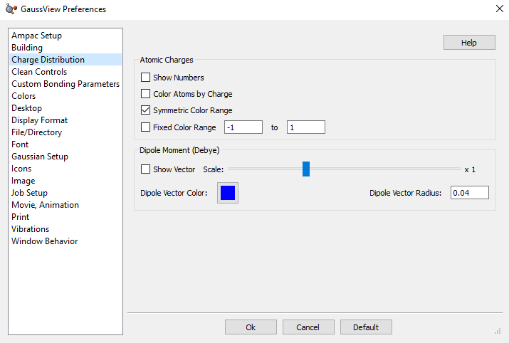
Clean 控制偏好设置（Clean Controls Preferences）¶
GaussView 的 Clean 功能可通过 Clean Controls Preferences 面板定制（如下图所示）。
自定义 Clean 功能（Customizing the Clean Function）可用此偏好设置面板修改和定制 GaussView Clean 功能的运行方式。
默认 Clean 设置力求平衡，以产生符合预期的“正常”结果。更改 Clean Controls Preferences 中的设置可能导致意外且不希望出现的结果，因此在更改前请仔细阅读以下各节。
对话框中有以下控件。Rel. Weights 列中的字段为：
-
键（Bond）：目标键长根据成键两原子的范德华半径指定，并按键型略作调整。它们并非化学精确值，但应能为 Gaussian 提供合理的输入几何。
-
非键（NonBond）：所有未直接成键原子之间的排斥项。该分量的作用是使原子中心彼此分开，以免一个原子遮挡另一个原子。但它不会调整联苯。
-
硬角（Hard Angle）：对含有 2–4 个键的原子中心计算硬角。因目标角度已知而权重更大。这些项对维持原子中心完整性至关重要。
-
软角（Soft Angle）：对含有 5 个或更多键的原子中心计算软角。目标角度虽不确知，但熟练后可获得理想结果。要生成三角双锥结构，请将轴向键角调至 180 度，并确保线性角度偏置选项开启。大多数情况下 Clean 过程会生成所需结构。多练习坐标模式，以掌握更复杂配位的清理技巧。
-
单中心二面角（1-Ctr Dihed）：沿每根键从 Newman 投影计算，仅限于少于 5 个键的原子中心。该项有助于在双中心二面角引起畸变时维持原子中心完整性。
-
双中心二面角（2-Ctr Dihed）：这是唯一影响三级结构的项。目标二面角将根据键型取交叉或重叠式。若每个原子中心含有多个键，目标二面角将取重叠式。

窗口底部复选框的作用如下：
-
线性角度权重加倍（Double the weight for linear angles）：该项有助于在原子中心角度不确知的软角情况下进行清理。
-
每根键只用一个双中心二面角（Use one 2-center dihedral per bond）：通常此选项应保持不勾选，仅为在较慢系统上提供更好性能而设。
Opt. Controls 列中的字段为：
-
容差（Tolerance）：值越小结构越精确，但清理耗时可能显著增加。范围应在 1.0E-5 至 1.0E-12 之间。
-
视图更新（View Updates）：控制清理中分子视图的更新频率。值为 1 表示每个 Clean 循环刷新一次，值为 10 表示每 10 个 Clean 循环刷新一次，值为 0 表示 Clean 完成前禁用视图更新。根据系统不同，该参数可能显著影响清理时间。
-
最大循环数（Max Cycles）：Clean 优化的最大步数。150 是较好的取值。较大结构可能需要更大取值。
-
最大时间（Max Time）：允许一次 Clean 操作完成的最长时间（秒）。
重要的是，Clean 力场的各分量是相对的。改变一个权重会影响其他权重的行为。例如，过大的非键权重会导致键变长。同样，过大的硬角权重可能影响双中心二面角。
将权重赋为 0.0 可禁用任一组项。例如，禁用单中心二面角项可加快清理，但所得三级结构可能不够理想。不要禁用键权重或硬角项。前者应相对于其他项保持较高。
Clean 性能技巧（Clean Performance Tips）¶
若系统上 Clean 功能太慢，可尝试以下设置：
-
NonBond：0
-
1-Ctr Dihed：0
-
每根键只用一个双中心二面角（Use one 2-center dihedral per bond）：勾选
-
视图更新（View Updates）：0
Clean 功能性能差也可能是系统内存不足的表现。
自定义颜色（Customizing Colors）¶
颜色（Colors）偏好设置允许自定义视图窗口背景、原子（元素）、键、表面和振动矢量显示的颜色。对话框如下图所示。
自定义 GaussView 颜色选项（Customizing GaussView Color Options）
所有颜色偏好设置对话框使用类似控件。都包含 Scheme 弹出菜单，指定显示渐变由几种颜色组成。但除表面外，该项仅限于单一颜色。
一般而言，若勾选使用 RGB 选择器（Use RGB Selector）复选框（默认勾选），则可用其下方滑块指定所需颜色的 RGB 值。若不勾选，则调用系统颜色选择工具。
颜色（Colors）偏好设置对话框中的按钮控制以下条目的着色：
-
背景颜色（Background Color）：视图窗口中的背景颜色。单击色块可修改。
-
元素颜色（Element Colors）：基于元素的原子着色。该按钮弹出显示每种元素默认颜色的元素周期表（见下）。单击任一元素可更改其默认颜色。此时会出现右侧对话框：
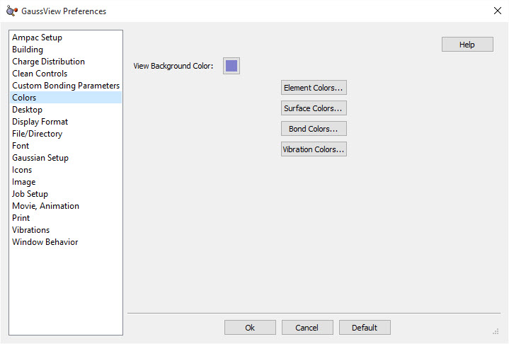
修改默认元素颜色（Modifying Default Element Colors）此处正在修改氖（Neon）原子的颜色。
-
表面颜色（Surface Colors）：指定表面的颜色（下面讨论）。
-
键颜色（Bond Colors）：设置各显示类型下键的着色。对话框与下图类似，并在球体上显示所选颜色。不要因此困惑；所选颜色将用于键着色，而非原子着色。
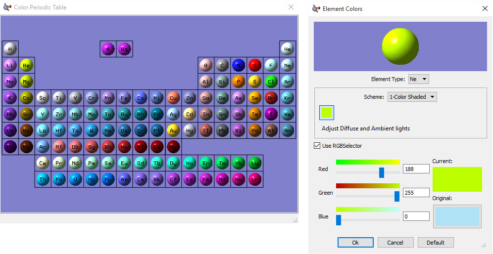
指定键着色（Specifying Bond Coloring）本例将线框显示模式下键的颜色从灰色改为黑色。
- 振动颜色（Vibration Colors）：设置振动显示中偶极导数矢量和位移矢量的着色。所选颜色将用于显示的矢量（而非原子）。
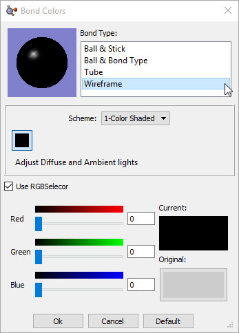
指定振动模式显示中的矢量颜色（Specifying Vector Colors in Vibrational Modes Displays）
指定表面颜色（Specifying Colors for Surfaces）¶
下图所示对话框用于指定表面的着色。对于具有正负叶（相位）的表面类型，需指定两种颜色（如图所示，为 MO 表面指定颜色）。
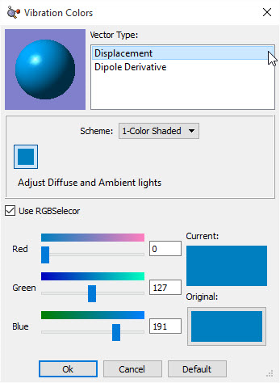
表面着色偏好设置（Surface Coloring Preferences）
该示例对话框顶部的字段允许选择表面类型和显示样式。对话框上部区域的示例表面近似显示了当前设置下表面的外观。
最重要的字段位于对话框中央。Scheme 弹出菜单允许选择应用于对象的着色类型。1-Color Shaded、2-Color Shaded、3-Color Shaded 和 4-Color Shaded 条目选择渐变填充着色，由指定颜色的深浅（1-Color Shaded）或指定颜色之间的混合（2 种或更多颜色）组成。请记住，审美上渐变宜少不宜多。1-Color Flat 方案用指定颜色以纯色模式给对象着色，不营造三维形状的错觉。
单击该区域的任一色块可修改该颜色。请注意，双叶表面将有两组色块，分别位于对话框左右两侧：
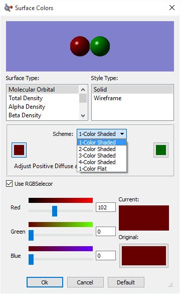
自定义成键参数（Custom Bonding Parameters）¶
在 GaussView 根据几何（原子间距离）判断成键的那些情况下使用自定义成键参数（Custom Bonding Parameters）。可通过工具（Tools）=>自定义成键参数（Custom Bonding Parameters）菜单路径为当前分子指定，或在 Custom Bonding Parameters Preferences 中指定默认值。
请注意，这是面向有经验用户的高级 GaussView 功能，使用时需谨慎。
定义自定义成键参数（Defining Custom Bonding Parameters）
GaussView 在以下情况下根据几何判断成键：
-
当载入分子且未提供成键连接数据时：例如不含 Geom=Connectivity 的 Gaussian 输入文件、日志文件（因为这些文件一般没有成键连接数据）、未请求标准残基成键（Standard Bonding for Residues）的 PDB 文件，或缺少 CONECT 记录或要求忽略 CONECT 记录时包含的 HETATM，等等。
-
当选择编辑（Edit）=>重新成键（Rebond）时。
-
当勾选重新成键（Rebond after Symmetrization）选项执行基于点群或空间群的对称化时。
-
当在 PBC 对话框中单击合并晶胞（Combine Cells）或选择内容（Contents）=>键（Bonds）=>重新成键（Rebond）时。
-
当在自定义成键参数（Custom Bonding Parameters）对话框中单击应用（Apply）或确定（OK）时。此时 GaussView 将对具有自定义成键参数的原子对重新计算成键。重要提示：若当前有选中的原子，则仅对它们考虑重新成键；否则对所有原子考虑。
对话框中的字段含义如下：
-
是否激活（Active?）：该参数是否激活（应用）。
-
元素 1 与元素 2（Elem. 1 and Elem. 2）：参与成键的原子。
-
三键、双键、共振键、单键、弱键（Triple, Double, Resonant, Single, Weak）：指定键型的最大键长。弱键以单虚线表示，可直观表示氢键等，其
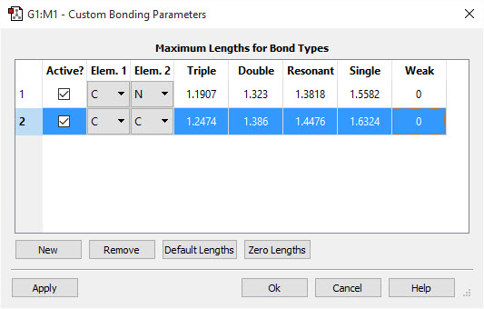
值通常保留为 0。此时，原子间距大于单键键值的视为不成键。
自定义成键参数不影响分子构建；构建器片段自带成键。由于成键可能影响 MM 原子类型判定、加氢、手性判定等，当最终成键与默认不同时，更改成键参数会产生实际影响。当因异常或较差几何导致 GaussView 未按预期指定某些键时（例如由低分辨率 X 射线衍射实验生成的 PDB），这些参数很有用。
显示格式偏好设置（Display Format Preferences）¶
该条目分为五个子类别：常规（General）、分子（Molecule）、表面（Surface）、文本（Text）与表面（Surface）。可用链接跳转到文档中其他位置对各条目的讨论。
桌面偏好设置：Windows 下指定文件关联（Desktop Preferences: Specifying File Associations Under Windows）¶
在 Windows 系统上，偏好设置对话框的桌面（Desktop）部分允许设置文件关联：文件扩展名将与 GaussView 关联，打开此类文件时自动用该应用程序打开。如下图所示。请注意，文件扩展名分布在两个面板中。
指定 Windows 文件关联（Specifying Windows File Associations）
要在 GaussView 与所列 Gaussian 文件类型之间创建文件关联，请勾选相应复选框。取消勾选则同样移除文件关联。范围（Scope）下拉菜单指定文件关联仅影响当前用户还是系统上的所有用户。
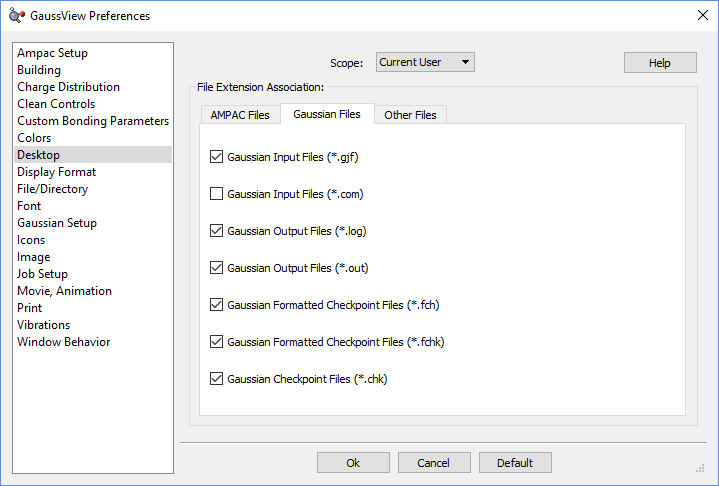
指定默认目录位置（Specifying Default Directory Locations）¶
文件/目录（File/Directory）偏好设置如下图所示。允许指定各类 GaussView 相关文件的默认位置。
指定默认目录位置（Specifying Default Directory Locations）
起始目录（Starting Directory）弹出菜单允许选择：
-
使用上次工作目录（Use previous work directory）：记住上次访问的目录，下次使用该目录。
-
使用启动目录（Use launch directory）：始终使用启动 GaussView 的目录作为默认目录。
-
指定（Specify）：始终使用指定目录。可用 ... 按钮导航到所需目录，或在文本框中输入完整路径。
暂存目录（Scratch Directory）弹出菜单指定 GaussView 在某些情况下使用的临时暂存文件的位置，选项如下：
-
使用 GAUSS_SCRDIR：GaussView 同样使用 Gaussian 暂存目录（由同名环境变量定义）。
-
使用启动目录（Use launch directory）：始终使用启动 GaussView 的目录作为 Gaussian 暂存目录。
-
指定（Specify）：始终使用指定目录作为 Gaussian 暂存目录。可用 ... 按钮导航到所需目录，或在文本框中输入完整路径。
最大最近文件数（Maximum Recent Files）字段指定文件（File）菜单上最近文件列表的最大长度。
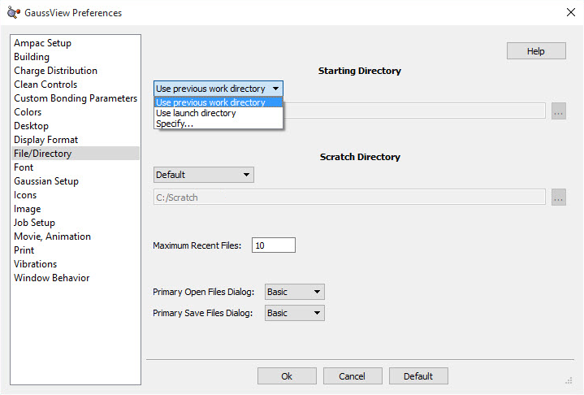
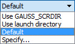
主要打开文件对话框（Primary Open Files Dialog）与主要保存文件对话框（Primary Save Files Dialog）弹出菜单允许分别选择默认使用的文件打开与保存对话框版本（defaults）。默认为较简单的形式，对应基本（Basic）菜单项。高级（Advanced）菜单选项对应更复杂、功能更丰富的版本。
GaussView 字体偏好设置（GaussView Font Preferences）¶
GaussView 偏好设置字体面板（GaussView Preferences Font Panel） GaussView 可用的字体选项。
该面板显示当前使用的应用程序字体。单击面板中的选择（Choose）按钮可打开操作系统的字体选择对话框。此处显示的是 Windows 操作系统的对话框。
请注意，此设置不影响显示标签的字体，显示标签字体在显示格式（Display Format）对话框/偏好设置中指定。
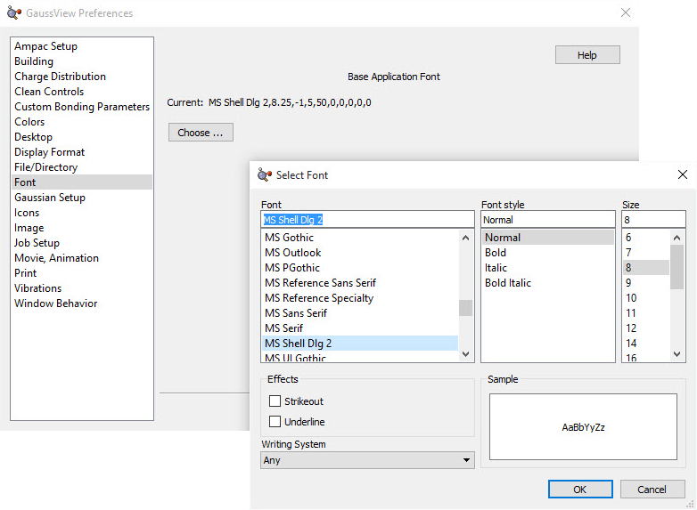
Gaussian 设置偏好设置（Gaussian Setup Preferences）¶
单击计算（Calculation）按钮将打开 Gaussian Calculation Setup 对话框的一个版本，可用于指定 Gaussian 计算的默认设置。这些设置也构成默认（Default）计算方案。
设置好默认任务后，单击 Gaussian Calculation Setup 对话框中的保留（Retain）按钮返回偏好设置。
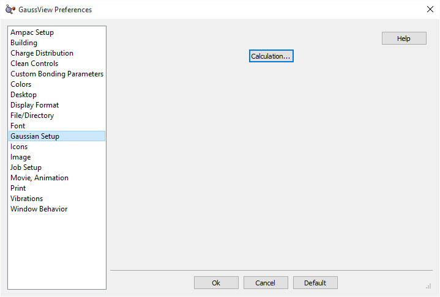
修改图标大小（Modifying Icon Sizes）¶
图标（Icons）偏好设置允许指定各 GaussView 窗口与工具栏的图标大小。如下图所示。对话框中的控件控制菜单、工具栏和独立构建器（Builder）调色板的图标。前两项默认为小图标，第三项默认为大图标。
自定义图标大小（Customizing Icon Sizes）
可用此偏好设置为各 GaussView 窗口选择更大的图标。
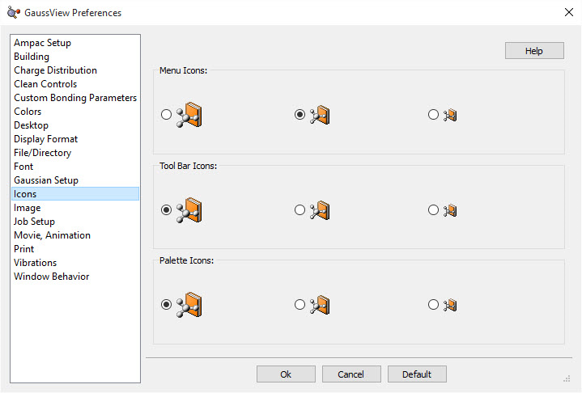
图像偏好设置（Image Preferences）¶
图像捕获与图像保存均受下图所示图像（Image）偏好设置控制。保存（Save）对话框中的设置优先于偏好设置。
图像偏好设置（Image Preferences）
该面板中的字段含义如下：
-
对象质量（Object Quality）：指定图像质量。将滑块移向真实感（Realistic）一端会增大文件大小并增加生成图像文件所需时间。
-
宽高放大倍数（Enlarge Width and Height by）：设置默认图像缩放因子（如上）。
-
背景颜色（Background Color）：图像的背景颜色。
-
通用像素格式（Generic Pixel Format）：使用系统软件渲染器。仅在图像捕获或打印过程中遇到渲染问题/失败后才应勾选此选项。
-
灰度（Gray Scale）：捕获前将图像转换为灰度（即黑白）。默认为保存彩色图像。
-
渲染方法（Render Method）：指定渲染方法。此菜单中的可用选项如上所示。该设置一般不应更改。
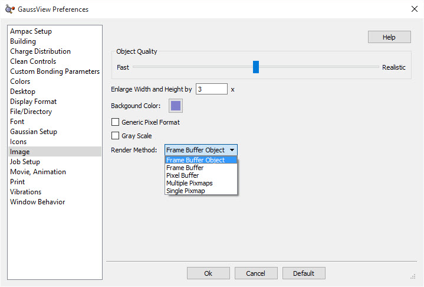
指定 Gaussian 程序的执行方式（Specifying How the Gaussian Program is Executed）¶
任务设置（Job Setup）偏好设置对话框允许查看和定制如何从 GaussView 内启动 Gaussian 及其工具。如下图所示。面板顶部的应用程序（Application）字段指定当前显示执行方法的程序或工具。在此弹出菜单下方是启动选项，所选启动方法关联的命令行显示在命令行（Command Line）区域。为方便起见，命令行中使用的 GaussView 内部变量的值显示在该字段下方。
任务设置偏好设置（Job Setup Preferences）本例选择在本地计算机上通过命令行直接运行 Gaussian。灰色 框显示用于此目的的命令（可编辑）。命令行中的 变量——大写、以 @ 开头——定义在 Command Line 区域下方。
每种任务类型有多种启动选项：
-
使用默认命令行直接执行（Execute directly using default command line）：使用下方区域指定的命令行在本地系统上启动任务。
-
使用默认命令行通过脚本间接执行（Execute indirectly through script using default command line）：使用 GaussView 提供的脚本在本地系统上启动任务。这些脚本位于 GaussView 安装目录的 bin 子目录中，名称如下所列。关联的命令行显示在对话框下方区域。如需定制，可用文本编辑器修改脚本。要使用其他脚本，请定义自定义命令行（见下一条）。
-
使用自定义命令行执行（Execute using custom command line）：使用框中指定的命令行启动任务。可输入适合当前情况的任何命令行。如需调用 GaussView 提供的脚本也可。成功使用此功能取决于对当前操作系统下 Gaussian 及其工具命令行调用的清楚理解。详情请查阅 Gaussian User's Reference。
-
使用 SC Job Manager：使用 SC Job Manager 功能运行任务，使用指定的命令。此处有相关描述。
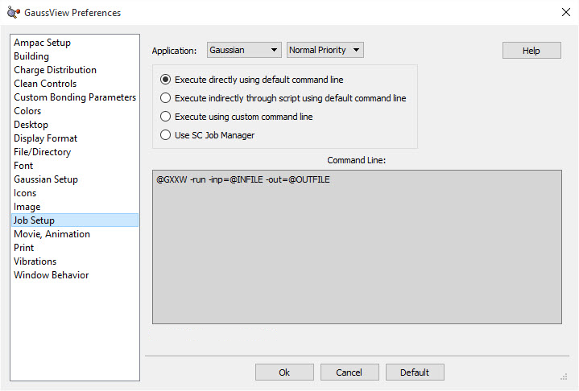
下图说明了使用第二种启动选项运行 Gaussian 程序时显示的命令行及其他信息：
通过外部脚本运行 Gaussian（Running Gaussian via an External Script）本例来自 Windows 系统。其他系统类型的变量定义不同。
可用的命令行变量（Available Command Line Variables）¶
下表列出了用于访问可执行文件和脚本的变量：
其中一些条目为其命令行定义了额外变量。其值由 GaussView 界面中的控件生成。关于各种工具参数的详情，请参阅 Gaussian User's Reference。
| Item | Variable(s) |
|---|---|
| all | @INFILE：输入文件（某些情况下使用多个编号的输入文件变量）@OUTFILE：输出文件 |
| Item | Direct Execution | Script |
|---|---|---|
| Gaussian program | @GXX (UNIX) @GXXW (Windows) |
@GXX_SCRIPT |
| CubeGen utility | @CUBEGEN | @CUBEGEN_SCRIPT |
| CubMan utility | @CUBMAN | @CUBMAN_SCRIPT |
| FormChk utility | @FORMCHK | @FORMCHK_SCRIPT |
| FreqChk utility | @FREQCHK | @FREQCHK_SCRIPT |
| GMMX facility | @GMMX | @GMMX_SCRIPT |
| Gaussian help | @BROWSER | @GAUSSIANHELP_SCRIPT |
| Text editor | @SCFILEEDITOR | @SCFILEEDITOR_SCRIPT |
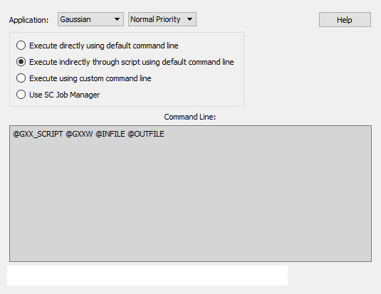
| Item | Variable(s) |
|---|---|
| most utilities | @MEMORY：要使用的内存量，通过对话框底部的字段指定： |
| CubeGen | @KIND：cube 文件类型 @NPTS：每“边”点数 @HEADER：是否包含标题行 |
| CubMan | @KIND：cube 文件类型 @SCALE：缩放因子 |
| FreqChk | @SAVE：是否保存简正模式 @NFD：是否跳过全矩阵对角化 @SEL：是否指定简正模式（如适用）@TEMP、@PRESS、@SCALE：温度、压强、缩放因子 @ISO：备用同位素选择 @PROJ：是否投影掉梯度方向 @SELINPUT：要包含的简正模式列表（如适用） |
| Gaussian help | @GAUSSIANHELP_URL：Gaussian 的位置 |
GaussView 提供的脚本（GaussView-Provided Scripts）¶
GaussView 在其 bin 子目录中提供以下脚本：
每个脚本的用法在文件开头的注释中有说明。修改任何脚本前，谨慎起见请先备份。除非另有说明，所有标准 UNIX 脚本在 Mac OS X 系统上同样提供。
| Menu Item | Linux/UNIX/Mac OS X | Windows |
|---|---|---|
| Gaussian | gv_gxx.sh | gv_gxx.bat |
| Cubegen | gv_cubegen.sh | gv_cubegen.bat |
| Cubman | gv_cubman.sh | gv_cubman.bat |
| FormChk | gv_formchk.sh | gv_formchk.bat |
| FreqChk | gv_freqchk.sh | gv_freqchk.bat |
| GMMX | gv_gmmx.sh | gv_gmmx.bat |
| Gaussian Help | gv_gaussianhelp.sh gv_gaussianhelp_mac.sh (Mac OS X) |
gv_gaussianhelp.bat |
| File Editor | gv_fileeditor.sh gv_fileeditor_mac.sh (Mac OS X) |
gv_fileeditor.bat |
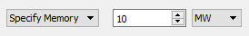
电影/动画偏好设置（Movie/Animation Preferences）¶
电影/动画（Movie/Animation）偏好设置指定从 GaussView 生成电影的设置。如下图所示：
电影/动画偏好设置：常规与分子动画（Movie/Animation Preferences: General and for Molecule Animations）
面板上半部分的控件含义如下：
-
对象质量（Object Quality）：指定电影质量。将滑块移向真实感（Realistic）一端会增大文件大小并增加生成电影文件所需时间。
-
宽高放大倍数（Enlarge Width and Height by）：设置默认电影缩放因子（如上）。
-
背景颜色（Background Color）：电影的背景颜色。
-
灰度（Gray Scale）：捕获前将电影转换为灰度（即黑白）。默认为保存彩色电影。
-
渲染方法（Render Method）：指定渲染方法。此菜单中的可用选项如上所示。该设置一般不应更改。
-
通用像素格式（Generic Pixel Format）：使用系统软件渲染器。仅在电影捕获或打印过程中遇到渲染问题/失败后才应勾选此选项。
-
目标纵横比（Target Aspect Ratio）：描述图像宽度与高度比例关系的投影属性。
电影/动画（Movie/Animation）偏好设置窗口下半部分有两个面板：分子组动画（Molecule Group Animations）面板适用于除振动频率动画之外的所有动画，振动动画（Vibration Animations）面板控制振动频率的动画。
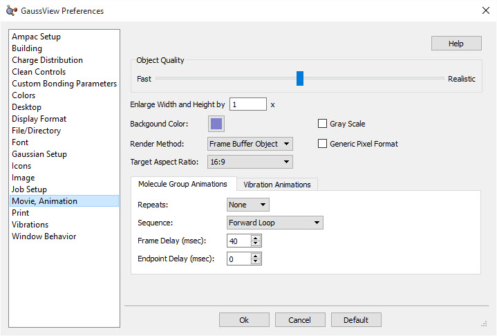